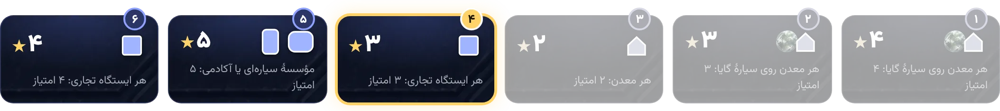

ننوبت نیلوفر۹ ساعتامتیاز دور ۴: هر ایستگاه تجاری ۳ امتیاز

در انتظار نیلوفر؛ نوبت که برسد خبرتان میکنیم۲۴ ساعتزمان نوبت شما
اعتبار۱۸سنگ۵دانش۴QIC۱قدرت۴۲۰
دور ۴ شروع شدآرش پاس دادسسارادیروزنیلوفر داره فرار میکنه با ۳۲ امتیاز 😅
ایستگاههای تجاری این دور خیلی میارزه
دیروز